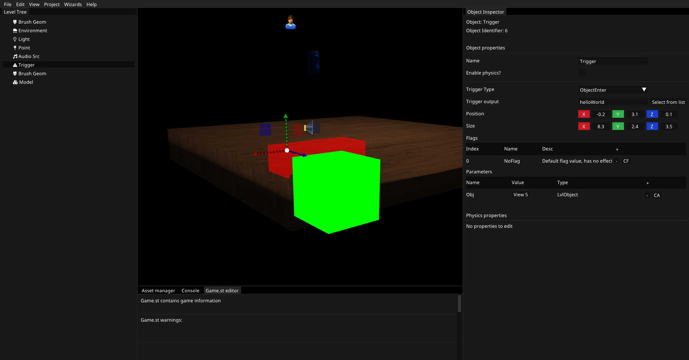

Introduction

What is Fusion?
Fusion is a code-driven 3D game engine powered by the Vulkan GPU API.
Features
- Positional audio engine
- Built in Mp3, FLAC, and OGG file decoding
- Realtime colored lighting
- Fast physics engine backed by Jolt
- Built in player controller, no need to write one
- Support for cubemapped skyboxes
- Easy to use client api
- Fast in-house build system, uses lua for configuration
- Cross platform, Microsoft Windows, and GNU/Linux are supported
- Built in level editor
- Custom file formats for models
- Custom physics collision meshes
- Ability to replace the client API if you don't want to use it (not recommended)
Why use Fusion?
Fusion is not really a public engine(sorry), its built with simplicity in mind, modern games use graphics as a way to get away with crappy game design, Fusion dosen't include any fancy graphical effects, you can still make a good game without pathtraced, screen spaced reflected glass or whatever. Its also code-driven, YOU WILL NOT HAVE AN OPTION TO USE VISUAL CODING.
Example code
#include "Fusion/etc/parameters.hpp"
#include "Fusion/math/vector.hpp"
#include "Fusion/world/level.hpp"
#include <MesaExample/triggers/helloWorldTrigger.hpp>
HelloWorldTriggerHandler::HelloWorldTriggerHandler() {
m_source = Fusion::Audio::addSourceFromAsset("example_sound");
};
void HelloWorldTriggerHandler::onActivate(Fusion::Parameters params){
auto obj = params.getAudioLvlItem("Obj");
obj.beginUpdate();
obj.setProperty(AUDIO_SRC_ITEM_PROPERTY_VOLUME, 0.5f);
obj.setProperty(AUDIO_SRC_ITEM_PROPERTY_PLAYING, "PLAY");
obj.endUpdate();
}
void HelloWorldTriggerHandler::onDeactivate(Fusion::Parameters params){
}
This code handles when a trigger is activated, the trigger name needs to be registered on game start. All it does is get an audio level item from its parameters, and sets the volume to 0.5, and makes it play. We could also manually create an audio-source if we wanted too.